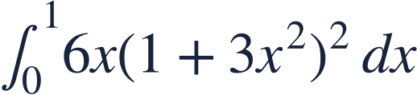
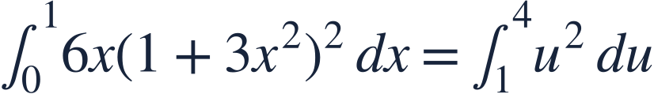
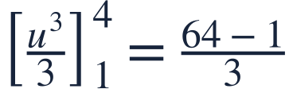
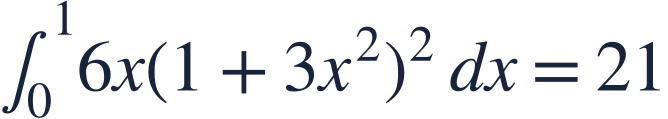
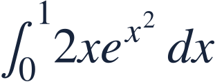

Substitution
치환적분

Substitution reverses the chain rule when an inner derivative is available.
치환적분은 안의 도함수가 있을 때 연쇄법칙을 거꾸로 적용합니다.

Substitution reverses the chain rule when an inner derivative is available.
치환적분은 안의 도함수가 있을 때 연쇄법칙을 거꾸로 적용합니다.
Look for an inside expression whose derivative matches the remaining factor.
남은 인수와 도함수가 일치하는 안의 식을 찾으세요.
Changing variables changes both the differential and the endpoint values.
변수를 바꾸면 미분요소와 끝점 값도 함께 바뀝니다.

Replace the full differential 6x dx by du.
미분요소 6x dx 전체를 du로 바꿉니다.

Evaluate using the new variable and new bounds.
새 변수와 새 구간으로 계산합니다.

The positive integrand gives a positive answer.
피적분함수가 양수이므로 답도 양수인지 확인합니다.
Do not combine a u-antiderivative with unchanged x-bounds.
u로 적분한 식에 원래 x 구간을 그대로 넣지 마세요.

Use u=x².
u=x²으로 치환하세요.